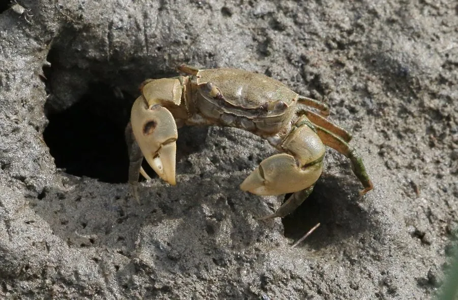

甲壳动物 · 动物界
粗腿厚蟹 Helice crassa

螯足粗壮、背甲近方的小型泥滩蟹，栖于新西兰河口泥滩，掘洞而居，是当地潮间带的常见种。
- 分类
- 门节肢动物门纲软甲纲目十足目科弓蟹科属厚蟹属
- 栖息环境
- 河口与海湾的潮间带上部泥地、盐沼
- 地理分布
- 新西兰的河口与海湾泥滩
- 保护级别
- 常见种，无保护需求；属当地河口生态关键种
物种志
粗腿厚蟹的头胸甲宽约三厘米，近方形而略拱，背甲灰褐至暗绿，表面有细颗粒。螯足特别粗壮，掌节外侧有明显的纵脊，粗腿之名由此而来。步足侧扁，末对足桨状，边缘有毛，适合在软泥上行走。眼柄细长，退潮时在洞口探头张望，稍有响动就缩回洞里。
它分布于新西兰的河口与海湾泥滩，栖息在潮间带上部的泥地和盐沼，掘洞而居，洞口周围常堆着挖出的泥球。它以有机碎屑、藻类和底栖小动物为食，退潮后出洞活动，涨潮时封洞躲避。它是当地河口食物网的重要成员，为涉禽和鱼类提供食物，密集的洞穴也会影响盐沼植被和堤岸稳定，是河口生态研究中的常见对象。
形态与习性
- 甲宽约三厘米，近方形略拱
- 螯足特别粗壮，掌节外侧有纵脊
- 步足侧扁，末对足桨状带毛
- 食性有机碎屑、藻类与底栖小动物
- 掘洞洞口周围堆有泥球
- 生态涉禽与鱼类的食物，影响盐沼植被
趣味知识
- 它的螯粗得与身体不成比例，粗腿厚蟹的名字名副其实。
- 涨潮时它用泥把洞口封死，自己在里面等到下一次退潮。
- 它挖洞翻动泥土，反过来又影响了盐沼植物的分布。